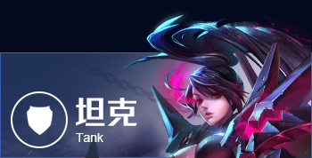
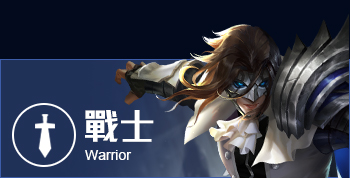
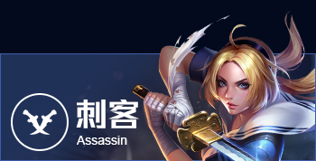
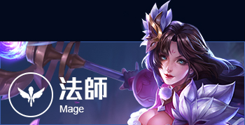
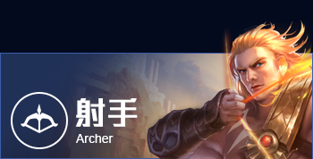
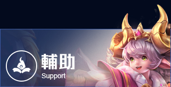

| 主頁 | 故事起源 | 英雄介绍 | 挑戰者技能 | 遊戲引導 |
|  | 坦克 因為具有高血量與防禦力的特性，因此常被稱為「肉盾」。 在多人對戰模式中通常可獨自防守一路，因為就算被偷襲，死亡率相對其他定位的角色也較低。 坦克在會戰時負責衝入敵方陣形開戰，以吸收大量傷害讓我方攻擊角色安心輸出為目標。 坦克車的出裝以增加血量為主，但若敵方陣營主力為魔法攻擊角色，須另外搭配魔法防禦裝備；反之若敵方主力為物理攻擊，則以物理防禦為主要出裝方向。 |
戰士 戰士為近戰物理輸出角色，通常血量與防禦力僅次於坦克，且具有一定的攻擊力，可作為隊伍中的副坦與次要輸出角色。 戰士前期同樣適合獨自防守一路，而在會戰時等坦克開戰後，可以直攻對方後排輸出角色，以擾亂敵方陣型。 出裝方向可以選擇全物理攻擊裝備，或嘗試混合防禦裝成為副坦，可說是玩法相當多變的一個定位。 |
 |
|  | 刺客 刺客是非常需要走位技巧與地圖觀念的突襲型角色，通常技能帶有「位移」的特性，因此很適合遊走各路進行偷襲。 因為血量與防禦力較低，遊戲前期需與隊友良好搭配，以擊殺盡可能多的小兵或英雄，並趕緊購買輸出裝備以快速壯大。 遊戲中後期，刺客的進場時機與走位技巧將是每一場會戰勝敗的關鍵，因此必須瞄準對方威脅性高的角色，盡快將其擊殺。 若狀況許可，刺客也可以前往無人防守的路線，靠著強大的攻擊能力迅速拿下防禦塔以破壞敵方陣線。 |
法師 法師具有強大的魔法攻擊能力，能製造大範圍傷害並具備控場能力，能暈眩或冰凍敵人並予以擊殺。 因為皮薄血少的關係，前期必須靠著技能快速清理兵線以取得經濟優勢，併購買以魔法傷害為主的裝備。 團戰中法師扮演控制敵方動向的角色，可藉由大範圍的魔法對多數敵人造成重大傷害。 法師是強而有力的輸出角色，但因為防禦力非常弱，必須謹慎走位以免瞬間陣亡。 |
 |
|  | 射手 與法師同樣具備強大的輸出能力，不同的是射手屬於物理輸出角色。 前期同樣因為生存能力較低，必須與隊友妥善搭配才能穩定在線上發展。 中期就可以開始發揮強大的攻擊能力，以本身擁有的遠距離輸出優勢在敵人靠近之前就削減對方大量血量，以製造會戰優勢。 出裝方向以提高物理攻擊力與穿透力為主。 若整體戰局不利我方，可適時搭配防禦裝來提高自身存活率，並抓緊機會扭轉情勢。 |
輔助 輔助在遊戲中是一個相當獨特的定位。 輔助角的攻擊能力不強，但技能效果具有牽制敵方、提升我方能力等特性，可以說是前中後期都不可或缺的重要角色。 由於缺乏攻擊手段，前期必須跟隊友同行，以各項輔助技能協助隊友取得擊殺數優勢。 出裝以防禦裝、回血或回魔裝為主，提高自身生存力與續戰力的同時，也代表能持續在戰場上幫助隊友。 |
 |